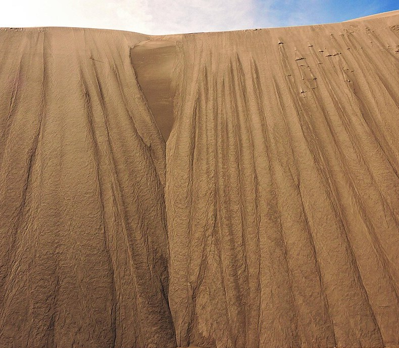

Materiales hechos de granos que a veces fluyen y a veces no
La arena de un reloj de arena cae como un chorro de líquido. Pero una montaña de arena se queda quieta como un sólido, con su ladera inclinada. Y si inclinás un poco más la ladera, se desmorona en una avalancha. Un mismo puñado de granos puede comportarse como sólido, como líquido o, si lo sacudís fuerte, como un gas de partículas que chocan. Por eso los materiales granulares son tan difíciles de describir.
Un grupo de investigadores franceses que firmó como GDR MiDi, el Grupo de Investigación sobre Medios Divididos del CNRS, reunió en 2004 los resultados de muchos laboratorios sobre el flujo de granos secos [1]. Explican que, cuando los granos son lo bastante grandes, de más de unos 250 micrómetros, y el fluido que los rodea no es muy viscoso, lo que manda son los contactos entre granos: las fuerzas capilares, las de van der Waals y las viscosas se pueden despreciar, y todo depende de los choques y de la fricción entre los granos [1].
Aun así, advierten, el flujo de estos materiales no es fácil de describir [1].

Según el GDR MiDi, los flujos granulares suelen dividirse en tres clases según la velocidad [1]:
La cancha de fútbol: una tribuna llena y quieta es como el régimen cuasiestático: cada uno en su lugar, apretado contra los vecinos. A la salida del estadio, la multitud que avanza empujándose es el flujo denso. Y en el recreo de una escuela, con chicos corriendo y chocándose de a dos, tenés el régimen «gaseoso».
El GDR MiDi comparó seis configuraciones: corte entre dos placas, corte anular, caída por un canal vertical, flujo sobre un plano inclinado, flujo sobre una pila y flujo en un tambor rotante [1]. Encontraron que, para materiales granulares comunes, las propiedades del flujo denso (la velocidad, la dilatancia y la fricción efectiva) están controladas por un único número adimensional, el número inercial [1]:
El número inercial compara la importancia de la inercia con la de la presión que confina a los granos [1]. Con I chico el flujo es denso; con I grande se vuelve un régimen colisional diluido [1]. La fricción efectiva, el cociente entre la tensión de corte y la presión dentro del material, depende de I [1]. Es como si el material granular fuera un fluido con un coeficiente de fricción que cambia según lo rápido que se lo deforma (una lectura propia de ese resultado).
Si un flujo de granos se frena o se aprietan los granos, el material puede pasar de fluir a sostenerse como un sólido. Eric Brown y Heinrich Jaeger explican que en el atascamiento (jamming, en inglés) ocurre una transición de fase de fluido a sólido, y que esa idea, venida de la física de los materiales granulares, inyectó nuevas ideas en el estudio de las suspensiones densas [2]. Daniel Bonn y colaboradores agregan que también las espumas y las emulsiones de gotas grandes se vuelven sólidas cuando su densidad supera un empaquetamiento crítico: una verdadera transición de atascamiento [3].
Lo que queda afuera: el GDR MiDi aclara que su trabajo se concentró en flujos estacionarios y uniformes, y dejó afuera cuestiones muy importantes como el disparo de las avalanchas, los flujos intermitentes y la segregación de granos de distinto tamaño [1]. Son, todavía, problemas abiertos de la física granular.
Los materiales granulares son colecciones de granos que solo se tocan y se rozan. Según cómo se los mueva, se comportan como sólidos, como líquidos o como gases. En el régimen denso, como el de una capa de granos que baja por una pendiente, un solo número, el inercial, controla el flujo y fija una fricción efectiva. Y al apretarse, los granos se atascan y el flujo se vuelve sólido.
Pregunta para la comunidad: Llená un embudo con arena y otro con agua, y medí cuánto tardan en vaciarse cuando están llenos y cuando están por la mitad. ¿El ritmo cambia igual en los dos? Pensá en la presión hidrostática del agua y en la red de contactos entre granos.